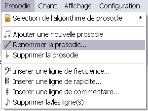
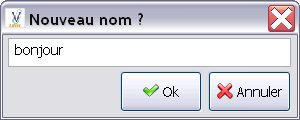

Pour renommer une prosodie existante dans un projet SIVOX, il faut cliquer sur Prosodie > Renommer la prosodie...

Le logiciel vous demande alors le nouveau nom de la prosodie en proposant par defaut le nom actuel

Si vous cliquez sur Ok la prosodie est renommée.